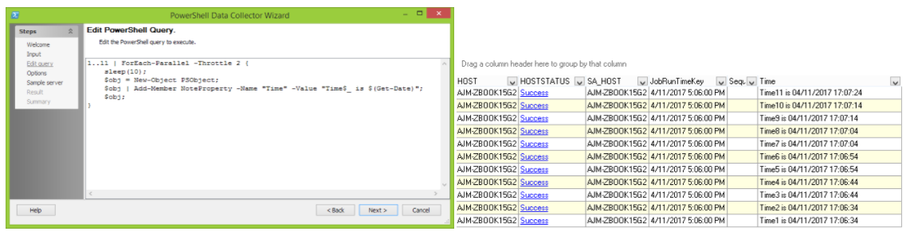

Summary: In SMP 8.1, there is hidden functionality to enable multi-threading of powershell scripts. Here is how to use it:
Issue: Engineering has requested a way to allow for easy multi-threading in the powershell DC. Development has created a hidden cmdlet named ForEach-Parallel that satisfies this request available in StealthAUDIT.
Instructions: ForEach-Parallel
Takes in an input object and runs {ScriptBlock} on a configurable number of threads
Example:
1..5 | ForEach-Parallel -Throttle 4 {
sleep(5);
"Time$_ is $(Get-Date)";
}
Time1 is 04/11/2017 17:09:59
Time2 is 04/11/2017 17:09:59
Time3 is 04/11/2017 17:09:59
Time4 is 04/11/2017 17:09:59
Time5 is 04/11/2017 17:10:04
In this example, we are instructing powershell to print the current system time. Since we have limited it to running only 4 threads, you can see in the output that the first four timestamps are the same, followed later by the fifth after a 5 second sleep on all active threads.
Here is an additional example:

Product: StealthAUDIT
Module: SA - DC - PowerShell
Versions: All
Dev Ticket: SAT-1574
Resolved In: 8.1
Legacy Article ID: 1563